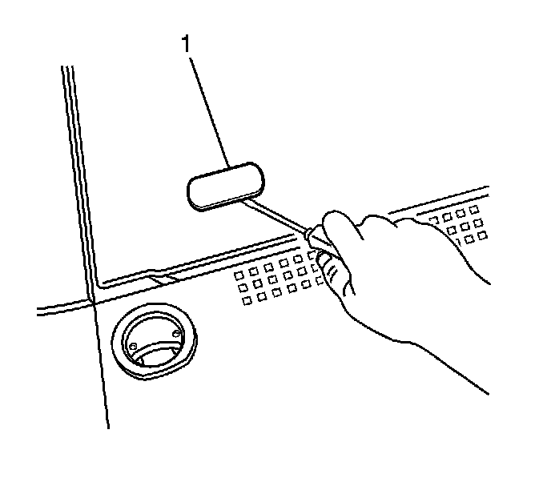
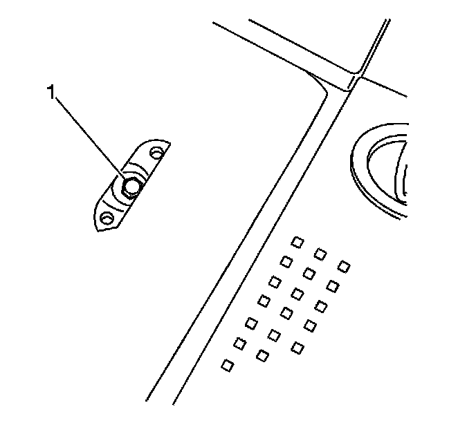
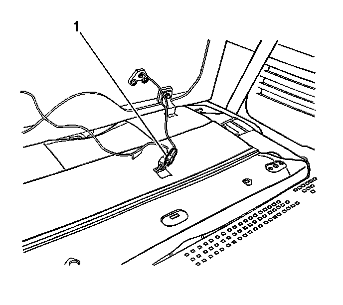
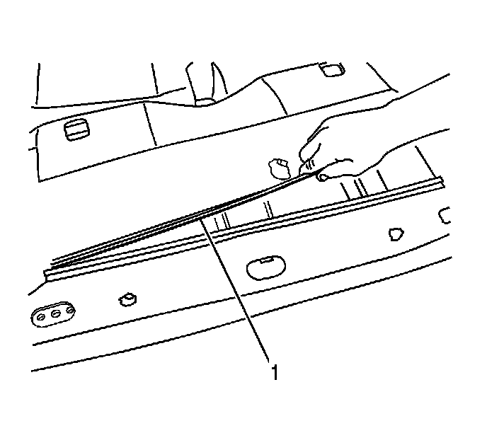
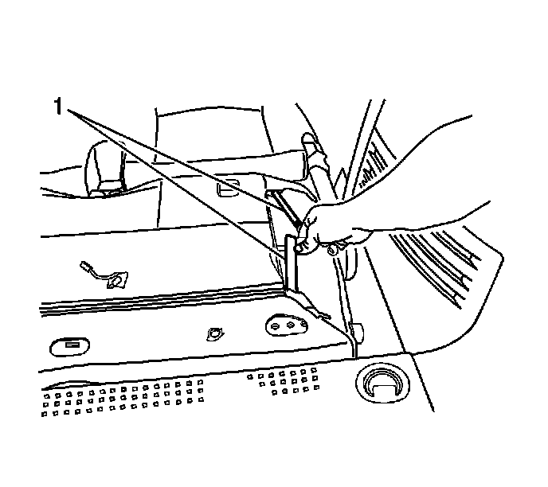
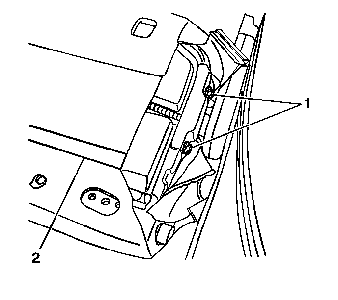

Procedures
Raising the Third (Rear Number 2) Seat Without Electrical Power
Removal Procedure

1. Using a flat-bladed tool, remove the retainer covers from the seat back (1).

2. Remove the seat back panel bolts (1).

3. Disconnect the electrical connectors (1).

4. Disconnect the seat back cover J-channel (1) sides.

5. Disconnect the seat back cover J-channel (1).

6. Remove the seat back retaining bolts (1) from both sides of the seat back.
7. Carefully feed the harness through the side of the seat back as you remove the seat back.

8. Remove the rear seat retainer cover (1).

9. Remove the rear seat no. 2 retaining bolts (1).
10. Disconnect the electrical connectors from the rear seat.

11. Remove the seat track covers (1).
12. With the aid from an assistant, remove the rear seat.